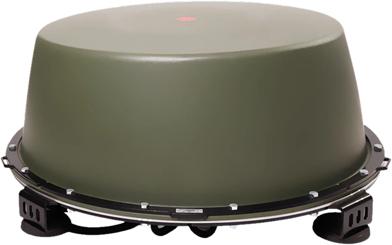

НПО «Киловатт»производитель
Шаблон · P00ноябрь 2026
Дизайн-система «Два горизонта» · 1080×1350
Шаблон постера
Копируй каркас и меняй содержимое: тему, заголовок, один вывод и рабочую зону. Один постер — один вывод, один акцент, цифры — только из claims.json.

Пример · тех-таблица
Диапазон частот300–5900 МГц
Каналов подавления12
Мощность передатчиковдо 240 Вт
Дальность подавления50–200 м
Питание12/24 В · 220 В
Масса24 кг
Рис. 1 · купольная схема
Сначала обнаружь. Потом подави.
Паспортные цифрыбез «примерно»
Реальные фотовырезки из съёмки
Один акцентсигнал, не фон
12 каналов
пример · полоса фактов
50–200 м
пример · единица акцентом
24 кг
пример · без лишних слов
12 мес
пример · заводская гарантия